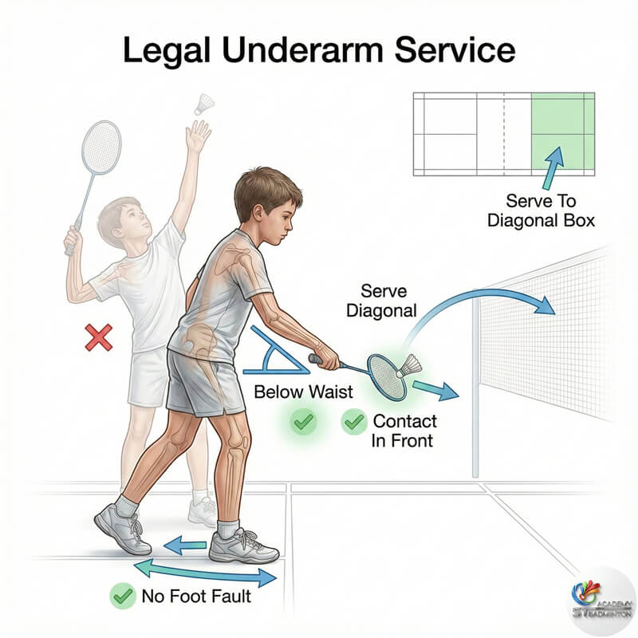
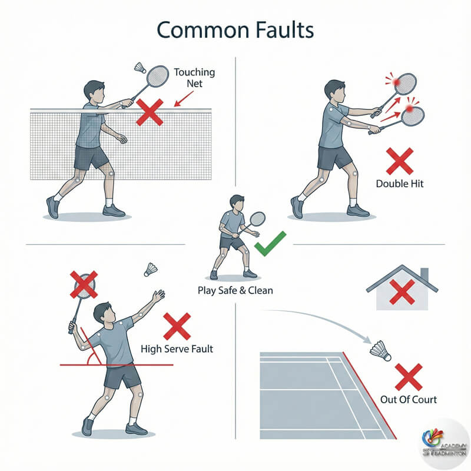

There are different rules in badminton depending on what type, like singles and doubles
Badminton is a racket sport where the objective is to hit the shuttlecock over the net and land it inside the opponent’s court so they cannot return it. It can be played in singles or doubles on a rectangular court divided by a net. Matches are usually played as best of three games, each played to 21 points, and a player or team must win by at least two points.
If the score reaches 20–20, play continues until one side leads by two points, with a maximum limit of 30 points. The game is fast-paced and requires accuracy, timing, and strategy.

